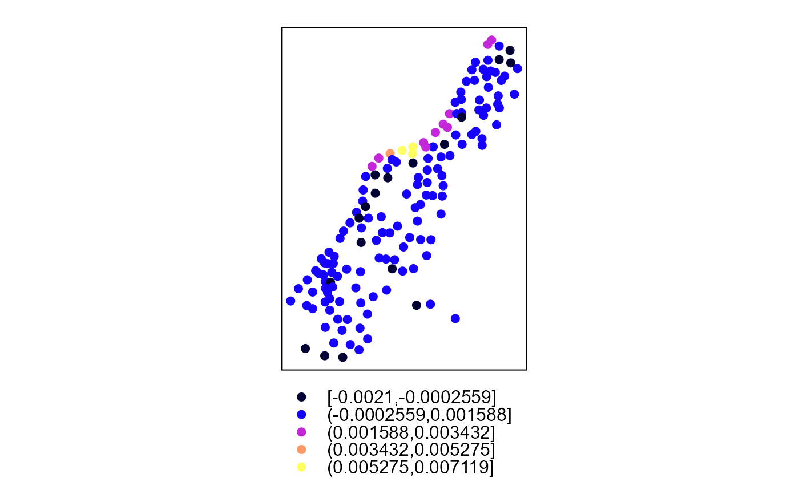

Calculates univariate or bivariate spatial cross-correlation using local Moran's-I (LISA), following Chen (2015)
crossCorrelation( x, y = NULL, coords = NULL, w = NULL, type = c("LSCI", "GSCI"), k = 999, dist.function = c("inv.power", "neg.exponent", "none"), scale.xy = TRUE, scale.partial = FALSE, scale.matrix = FALSE, alpha = 0.05, clust = TRUE, return.sims = FALSE )
| x | Vector of x response variables |
|---|---|
| y | Vector of y response variables, if not specified the univariate statistic is returned |
| coords | A matrix of coordinates corresponding to (x,y), only used if w = NULL. Can also be an sp object with relevant x,y coordinate slot (ie., points or polygons) |
| w | Spatial neighbors/weights in matrix format. Dimensions must match (n(x),n(y)) and be symmetrical. If w is not defined then a default method is used. |
| type | c("LSCI","GSCI") Return Local Spatial Cross-correlation Index (LSCI) or Global Spatial cross-correlation Index (GSCI) |
| k | Number of simulations for calculating permutation distribution under the null hypothesis of no spatial autocorrelation |
| dist.function | ("inv.power", "neg.exponent", "none") If w = NULL, the default method for deriving spatial weights matrix, options are: inverse power or negative exponent, none is for use with a provided matrix |
| scale.xy | (TRUE/FALSE) scale the x,y vectors, if FALSE it is assumed that they are already scaled following Chen (2015) |
| scale.partial | (FALSE/TRUE) rescale partial spatial autocorrelation statistics |
| scale.matrix | (FALSE/TRUE) If a neighbor/distance matrix is passed, should it be scaled using (w/sum(w)) |
| alpha | = 0.05 confidence interval (default is 95 pct) |
| clust | (FALSE/TRUE) Return approximated lisa clusters |
| return.sims | (FALSE/TRUE) Return randomizations vector n = k |
When not simulated k=0, a list containing:
I Global autocorrelation statistic
SCI A data.frame with two columns representing the xy and yx autocorrelation
nsim value of NULL to represent p values were derived from observed data (k=0)
p Probability based observations above/below confidence interval
t.test Probability based on t-test
clusters If "clust" argument TRUE, vector representing LISA clusters
when simulated (k>0), a list containing:
I Global autocorrelation statistic
SCI A data.frame with two columns representing the xy and yx autocorrelation
nsim value representing number of simulations
global.p p-value of global autocorrelation statistic
local.p Probability based simulated data using successful rejection of t-test
range.p Probability based on range of probabilities resulting from paired t-test
clusters If "clust" argument TRUE, vector representing lisa clusters
In specifying a distance matrix, you can pass a coordinates matrix or spatial object to coords or alternately, pass a distance or spatial weights matrix to the w argument. If the w matrix represents spatial weights dist.function="none" should be specified. Otherwise, w is assumed to represent distance and will be converted to spatial weights using inv.power or neg.exponent. The w distances can represent an alternate distance hypothesis (eg., road, stream, network distance) Here are example argument usages for defining a matrix.
IF coords=x, w=NULL, dist.function= c("inv.power", "neg.exponent") A distance matrix is derived using the data passed to coords then spatial weights derived using one of the dist.function options
IF cords=NULL, w=x, dist.function= c("inv.power", "neg.exponent") It is expected that the distance matrix specified with w represent some form of distance then the spatial weights are derived using one of the dist.function options
IF cords=NULL, w=x, dist.function="none" It is assumed that the matrix passed to w already represents the spatial weights
Chen, Y.G. (2012) On the four types of weight functions for spatial contiguity matrix. Letters in Spatial and Resource Sciences 5(2):65-72
Chen, Y.G. (2013) New approaches for calculating Moran’s index of spatial autocorrelation. PLoS ONE 8(7):e68336
Chen, Y.G. (2015) A New Methodology of Spatial Cross-Correlation Analysis. PLoS One 10(5):e0126158. doi:10.1371/journal.pone.0126158
# replicate Chen (2015) data(chen) ( r <- crossCorrelation(x=chen[["X"]], y=chen[["Y"]], w = chen[["M"]], clust=TRUE, type = "LSCI", k=0, dist.function = "inv.power") )#>#>#> Moran's-I... #> First-order Moran's-I: 0.1566446 #> First-order p-value: #> #> Chen's SCI under randomization assumptions... #> #> Summary statistics of local partial cross-correlation [xy] #> Min. 1st Qu. Median Mean 3rd Qu. Max. #> -0.0077674 -0.0005055 0.0013531 0.0054015 0.0045101 0.0589298 #> #> non-simulated second-order p-value based on 2-tailed t-test: 0.037588 #> p-value based on 2-tailed t-test observations above/below CI: 0.06896552 #> #> Counts of cluster types #> High.High High.Low Low.High Low.Low #> 9 1 7 12#>#> #> #>#> #>#> #> #>data(meuse) coordinates(meuse) <- ~x+y #### Using a default spatial weights matrix method (inverse power function) ( I <- crossCorrelation(meuse$zinc, meuse$copper, coords = coordinates(meuse), k=99) )#>#> #>#> Moran's-I under randomization assumptions... #> First-order Moran's-I: 0.08906818 #> First-order p-value: 0 #> Chen's SCI under randomization assumptions... #> #> Summary statistics of local partial cross-correlation [xy] #> Min. 1st Qu. Median Mean 3rd Qu. Max. #> -2.100e-03 -5.538e-06 3.498e-04 5.746e-04 8.350e-04 7.119e-03 #> #> p-value based on 2-tailed t-test: 0 #> p-value based on 2-tailed t-test observations above/below CI: 0 #> #> Counts of cluster types #> High.High High.Low Low.High Low.Low #> 44 16 25 70#### Providing a distance matrix Wij <- spDists(meuse) ( I <- crossCorrelation(meuse$zinc, meuse$copper, w = Wij, k=99) )#>#> #>#> Moran's-I under randomization assumptions... #> First-order Moran's-I: 0.08906818 #> First-order p-value: 0 #> Chen's SCI under randomization assumptions... #> #> Summary statistics of local partial cross-correlation [xy] #> Min. 1st Qu. Median Mean 3rd Qu. Max. #> -2.100e-03 -5.538e-06 3.498e-04 5.746e-04 8.350e-04 7.119e-03 #> #> p-value based on 2-tailed t-test: 0 #> p-value based on 2-tailed t-test observations above/below CI: 0 #> #> Counts of cluster types #> High.High High.Low Low.High Low.Low #> 44 16 25 70#### Providing an inverse power function weights matrix Wij <- spDists(meuse) Wij <- 1 / Wij diag(Wij) <- 0 Wij <- Wij / sum(Wij) diag(Wij) <- 0 ( I <- crossCorrelation(meuse$zinc, meuse$copper, w = Wij, dist.function = "none", k=99) )#>#> #>#> Moran's-I under randomization assumptions... #> First-order Moran's-I: 0.08906818 #> First-order p-value: 0 #> Chen's SCI under randomization assumptions... #> #> Summary statistics of local partial cross-correlation [xy] #> Min. 1st Qu. Median Mean 3rd Qu. Max. #> -2.100e-03 -5.538e-06 3.498e-04 5.746e-04 8.350e-04 7.119e-03 #> #> p-value based on 2-tailed t-test: 0 #> p-value based on 2-tailed t-test observations above/below CI: 0 #> #> Counts of cluster types #> High.High High.Low Low.High Low.Low #> 44 16 25 70# }